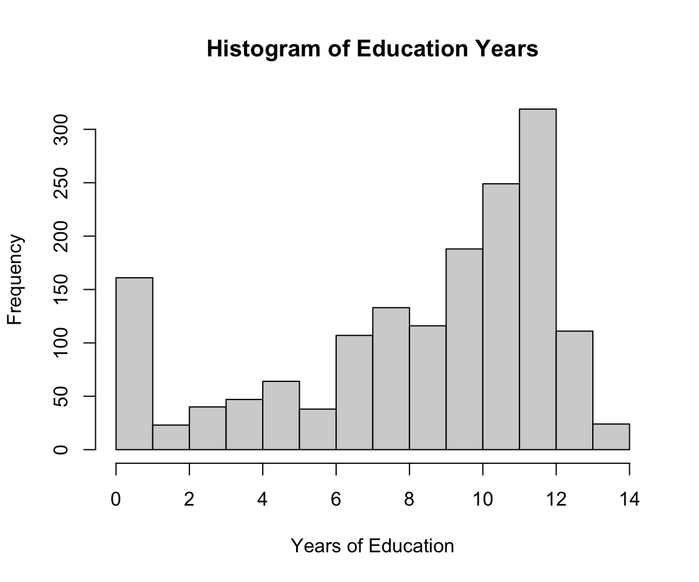

library(HDSinRdata)
library(tidyverse)
library(gt)
library(gtsummary)6 Case Study: Pre-Processing Data
In this chapter, we put some of our R skills together in a case study. This case study focuses on data cleaning and pre-processing. We use the tb_diagnosis_raw data from the HDSinRdata package. This data contains information on 1,634 patients in rural South Africa who presented at a health clinic with tuberculosis-related symptoms and were tested for tuberculosis (TB) using Xpert MTB/RIF. Our goal is to clean this data to reflect the pre-processing described in Baik et al. (2020). This paper uses this data to derive a simple risk score model for screening patients for treatment while awaiting Xpert results. We use the tidyverse packages as well as the summary tables from gtsummary.
To begin, read in the data and review the description of the original columns. Some things to note in the data documentation are the ways unknown, missing, or refused values are coded as well as how some of the columns are related to each other.
# Read in data
data("tb_diagnosis_raw")
# Inspect variable descriptions
# ?tb_diagnosis_rawTo start, we select variables needed for our analysis. In particular, we drop columns related to the participation in the survey and about seeking care. Since some of these variables contain long or vague names, we also rename most of the variables.
# Select variables and rename
tb_df <- tb_diagnosis_raw %>%
select(c(xpert_status_fac, age_group, sex, hiv_status_fac,
other_conditions_fac___1, other_conditions_fac___3,
other_conditions_fac___88, other_conditions_fac___99,
symp_fac___1, symp_fac___2, symp_fac___3, symp_fac___4,
symp_fac___99, length_symp_unit_fac, length_symp_days_fac,
length_symp_wk_fac, length_symp_mnt_fac, length_symp_yr_fac,
smk_fac, dx_tb_past_fac, educ_fac)) %>%
rename(tb = xpert_status_fac, hiv_pos = hiv_status_fac,
cough = symp_fac___1, fever = symp_fac___2,
weight_loss = symp_fac___3, night_sweats = symp_fac___4,
symptoms_missing = symp_fac___99,
ever_smoke = smk_fac,
past_tb = dx_tb_past_fac, education = educ_fac)We then use a summary table to understand the initial distributions of the variables observed. This also highlights where we have missing or unknown data.
tbl_summary(tb_df) %>%
as_gt()| Characteristic | N = 1,6341 |
|---|---|
| tb | |
| 1 | 765 (47%) |
| 2 | 869 (53%) |
| age_group | |
| [15,25) | 240 (15%) |
| [25,35) | 333 (20%) |
| [35,45) | 385 (24%) |
| [45,55) | 343 (21%) |
| [55,99) | 333 (20%) |
| sex | |
| 1 | 830 (51%) |
| 2 | 804 (49%) |
| hiv_pos | |
| 1 | 632 (39%) |
| 2 | 815 (50%) |
| 77 | 139 (8.5%) |
| 88 | 48 (2.9%) |
| other_conditions_fac___1 | 895 (55%) |
| other_conditions_fac___3 | 52 (3.2%) |
| other_conditions_fac___88 | 11 (0.7%) |
| other_conditions_fac___99 | 30 (1.8%) |
| cough | 1,279 (78%) |
| fever | 479 (29%) |
| weight_loss | 534 (33%) |
| night_sweats | 579 (35%) |
| symptoms_missing | 22 (1.3%) |
| length_symp_unit_fac | |
| 1 | 207 (14%) |
| 2 | 603 (39%) |
| 3 | 538 (35%) |
| 4 | 83 (5.4%) |
| 77 | 98 (6.4%) |
| Unknown | 105 |
| length_symp_days_fac | 3 (3, 4) |
| Unknown | 1,427 |
| length_symp_wk_fac | |
| 1 | 183 (30%) |
| 2 | 237 (39%) |
| 3 | 147 (24%) |
| 4 | 15 (2.5%) |
| 5 | 5 (0.8%) |
| 6 | 13 (2.2%) |
| 7 | 3 (0.5%) |
| Unknown | 1,031 |
| length_symp_mnt_fac | 2 (1, 3) |
| Unknown | 1,096 |
| length_symp_yr_fac | 2 (1, 4) |
| Unknown | 1,551 |
| ever_smoke | |
| 1 | 294 (18%) |
| 2 | 252 (15%) |
| 3 | 1,072 (66%) |
| 99 | 16 (1.0%) |
| past_tb | |
| 1 | 255 (16%) |
| 2 | 1,354 (83%) |
| 77 | 25 (1.5%) |
| education | 10 (7, 12) |
| 1 n (%); Median (IQR) | |
One observation from the table is that the coding of variables is inconsistent, with some using 0/1 and others using 1/2. We want to standardize how these variables are represented. To start, we update our tb column. Additionally, we create a column male from the previous column sex to make the reference level clear. We can then drop the sex column.
# Re-code binary variables to 0/1 instead of 1/2
tb_df$tb <- case_when(tb_df$tb == 1 ~ 1,
tb_df$tb == 2 ~ 0)
tb_df$male <- case_when(tb_df$sex == 1 ~ 1,
tb_df$sex == 2 ~ 0)
tb_df <- tb_df %>% select(-c(sex))Diabetes is another variable that should be coded this way. In the raw data, several columns correspond to this question about other medical conditions. Therefore, we need to use the columns other_conditions_fac___88 and other_conditions_fac___99 to check whether the participant did not answer the question when interpreting the 0/1 value for diabetes.
# Re-code diabetes to check if missing
tb_df$diabetes <- case_when(tb_df$other_conditions_fac___3 == 1 ~ 1,
tb_df$other_conditions_fac___1 == 1 ~ 0,
tb_df$other_conditions_fac___88 == 1 ~ NA,
tb_df$other_conditions_fac___99 == 1 ~ NA,
TRUE ~ 0)
tb_df <- tb_df %>% select(-c(other_conditions_fac___1,
other_conditions_fac___3,
other_conditions_fac___88,
other_conditions_fac___99))
table(tb_df$diabetes)
#>
#> 0 1
#> 1541 52Next, we similarly code our variables about HIV status, smoking, and whether the patient has ever been diagnosed with tuberculosis before. For these variables, if the patient answered that they did not know if their HIV status or had tested positive for TB, we code these as 0 to be consistent with the paper.
# Re-code variables with missing or refused values
tb_df$hiv_pos <- case_when((tb_df$hiv_pos == 1) ~ 1,
tb_df$hiv_pos %in% c(2,77) ~ 0,
tb_df$hiv_pos == 88 ~ NA)
tb_df$ever_smoke <- case_when(tb_df$ever_smoke %in% c(1,2) ~ 1,
tb_df$ever_smoke == 3 ~ 0,
tb_df$ever_smoke == 99 ~ NA)
tb_df$past_tb <- case_when(tb_df$past_tb == 1 ~ 1,
tb_df$past_tb %in% c(2,77) ~ 0)The next variable we clean is education. First, we need to code NA values correctly. We can then observe the distribution of years of education.
# Code NA values and look at education distribution
tb_df$education[tb_df$education == 99] <- NA
hist(tb_df$education, xlab = "Years of Education",
main = "Histogram of Education Years")
For our purposes, we want to represent education as whether a person has a high school education or less.
# Categorize education to HS and above
tb_df$hs_less <- case_when(tb_df$education <= 12 ~ 1,
tb_df$education > 12 ~ 0,
TRUE ~ NA)
tb_df <- tb_df %>% select(-c(education))There are several variables in the data related to how long a person has experienced symptoms. In the following code, we can see that the unit of the symptoms, recorded in length_symp_unit_fac, determines which other column is entered. For example, if length_symp_unit_fac == 1, then the only column without an NA value is length_symp_days_fc.
tb_df %>%
group_by(length_symp_unit_fac) %>%
summarize(missing_days = sum(is.na(length_symp_days_fac))/n(),
missing_wks = sum(is.na(length_symp_wk_fac))/n(),
missing_mnt = sum(is.na(length_symp_mnt_fac))/n(),
missing_yr = sum(is.na(length_symp_yr_fac))/n())
#> # A tibble: 6 × 5
#> length_symp_unit_fac missing_days missing_wks missing_mnt missing_yr
#> <int> <dbl> <dbl> <dbl> <dbl>
#> 1 1 0 1 1 1
#> 2 2 1 0 1 1
#> 3 3 1 1 0 1
#> 4 4 1 1 1 0
#> 5 77 1 1 1 1
#> 6 NA 1 1 1 1Additionally, these measurements are positive integer values.
min(tb_df$length_symp_days_fac, na.rm = TRUE)
#> [1] 1
is.integer(tb_df$length_symp_days_fac)
#> [1] TRUEThis allows us to create a new variable that represents whether or not someone has had symptoms for more than two weeks. In our case_when() function call, we first check whether the duration is missing before checking for the cases when symptoms would be less than two weeks.
# Categorize number of weeks experiencing symptoms
tb_df <- tb_df %>%
mutate(case_when((length_symp_unit_fac == 77 |
is.na(length_symp_unit_fac)) ~ NA,
(length_symp_unit_fac == 1 &
length_symp_days_fac <= 14) ~ 0,
(length_symp_unit_fac == 2 &
length_symp_wk_fac <= 2) ~ 0,
TRUE ~ 1))
tb_df <- tb_df %>%
select(-c(length_symp_wk_fac, length_symp_days_fac,
length_symp_mnt_fac, length_symp_yr_fac,
length_symp_unit_fac))Last, we update our symptom variables to have a summary column num_symptoms that represents the total number of classic TB symptoms rather than keeping track of individual symptoms. We also exclude anyone who does not have any TB symptoms.
# Count total number of symptoms
tb_df$num_symptoms <- tb_df$fever + tb_df$weight_loss + tb_df$cough +
tb_df$night_sweats
tb_df$num_symptoms[tb_df$symptoms_missing == 1] <- NA
tb_df <- tb_df %>% select(-c(night_sweats, weight_loss, cough, fever,
symptoms_missing))
# Exclude observations with no TB symptoms
tb_df <- tb_df %>%
filter(num_symptoms != 0)
table(tb_df$num_symptoms)
#>
#> 1 2 3 4
#> 600 344 265 196Last, we convert all variables to factors.
# Convert all variables to factors
tb_df[] <- lapply(tb_df, function(x){return(as.factor(x))})Our final data is summarized in the following table. The add_overall() function includes the overall summary statistics in addition to our stratified summaries. Our summary table looks similar to the one in the paper. However, it looks like we have a few more observations included. Additionally, our education variable shows a lower percentage of observations with post-high school education and positive HIV status.
tbl_summary(tb_df, by = "tb") %>%
add_overall() %>%
as_gt()| Characteristic | Overall, N = 1,4051 | 0, N = 7041 | 1, N = 7011 |
|---|---|---|---|
| age_group | |||
| [15,25) | 205 (15%) | 121 (17%) | 84 (12%) |
| [25,35) | 286 (20%) | 120 (17%) | 166 (24%) |
| [35,45) | 338 (24%) | 136 (19%) | 202 (29%) |
| [45,55) | 305 (22%) | 158 (22%) | 147 (21%) |
| [55,99) | 271 (19%) | 169 (24%) | 102 (15%) |
| hiv_pos | |||
| 0 | 808 (59%) | 503 (73%) | 305 (45%) |
| 1 | 556 (41%) | 186 (27%) | 370 (55%) |
| Unknown | 41 | 15 | 26 |
| ever_smoke | |||
| 0 | 899 (64%) | 483 (69%) | 416 (60%) |
| 1 | 496 (36%) | 213 (31%) | 283 (40%) |
| Unknown | 10 | 8 | 2 |
| past_tb | |||
| 0 | 1,186 (84%) | 613 (87%) | 573 (82%) |
| 1 | 219 (16%) | 91 (13%) | 128 (18%) |
| male | |||
| 0 | 669 (48%) | 394 (56%) | 275 (39%) |
| 1 | 736 (52%) | 310 (44%) | 426 (61%) |
| diabetes | |||
| 0 | 1,326 (97%) | 658 (97%) | 668 (96%) |
| 1 | 47 (3.4%) | 22 (3.2%) | 25 (3.6%) |
| Unknown | 32 | 24 | 8 |
| hs_less | |||
| 0 | 119 (8.5%) | 73 (10%) | 46 (6.6%) |
| 1 | 1,276 (91%) | 625 (90%) | 651 (93%) |
| Unknown | 10 | 6 | 4 |
| case_when(...) | |||
| 0 | 592 (44%) | 386 (57%) | 206 (31%) |
| 1 | 760 (56%) | 294 (43%) | 466 (69%) |
| Unknown | 53 | 24 | 29 |
| num_symptoms | |||
| 1 | 600 (43%) | 426 (61%) | 174 (25%) |
| 2 | 344 (24%) | 181 (26%) | 163 (23%) |
| 3 | 265 (19%) | 67 (9.5%) | 198 (28%) |
| 4 | 196 (14%) | 30 (4.3%) | 166 (24%) |
| 1 n (%) | |||